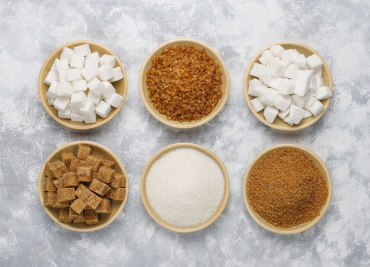

Химия
Углеводы
Строение, виды и роль в жизни живых организмов
Первое практическое знакомство человека с углеводами известно еще с глубокой древности. Обработка древесины, изготовление бумаги и тканей, хлебопечение, брожение – все эти процессы непосредственно связаны с переработкой углеводсодержащего сырья.
Углеводы входят в состав всех живых организмов, они составляют около 80% от сухой массы растений, а полисахарид целлюлоза является самым распространенным органическим веществом на Земле.
Содержание:
Определение, классификация и строение углеводов
Углеводы – это природные соединения, имеющие состав Cn(H2O)m.
В растениях и животных углеводы выполняют разнообразные функции: служат источником энергии, являются "строительным материалом" клеточных стенок растений, определяют защитные свойства млекопитающих (наряду с белками). Углеводы служат исходными веществами для производства бумаги, искусственных волокон, взрывчатых веществ и др. Многие углеводы находят применение в медицине.
Становление химии как науки во второй половине XVIII века неразрывно связано с первыми работами в области химии углеводов.
- Глюкоза
- моносахарид, виноградный сахар
- Сахароза
- дисахарид, тростниковый сахар
- Крахмал
- полисахарид, синтезируемый разными растениями в хлоропластах, под действием света при фотосинтезе, основное питательное вещество в клетках растений
- Целлюлоза
- полисахарид, главная составная часть клеточных оболочек всех высших растений
Классификация углеводов
Исторически к углеводам относят вещества весьма разнообразного строения - от низкомолекулярных, построенных всего лишь из нескольких атомов углерода (чаще всего из пяти или шести), до полимеров с молекулярной массой в несколько миллионов.
Последние, называемые полисахаридами, в результате полного гидролиза образуют более простые соединения - моносахариды. Промежуточную группу составляют олигосахариды, включающие относительно небольшое количество мономерных звеньев.
- Моносахариды
- мономеры, из остатков которых состоят углеводы более сложного строения. Моносахариды не подвергаются гидролизу.
- Олигосахариды
- олигомеры, содержащие от 2 до 10 моносахаридных остатков.
- Полисахариды
- полимеры, включающие до нескольких тысяч моносахаридных звеньев.
| Тип | Строение | Свойства |
| Моносахариды | Число атомов С С3-триозы С4-тетрозы С5-пентозы С6-гексозы |
Бесцветные, имеют сладкий вкус, хорошо растворимы в воде, кристаллизуются |
| Олигосахариды | Сложные углеводы. Содержат от 2 до 10 моносахаридных остатков |
Имеют сладкий вкус, хорошо растворимы в воде |
| Полисахариды | Сложные углеводы. Состоят из большого числа мономеров – простых сахаров и их производных |
Плохо или нерастворимы в воде, не имеют сладкий вкус |
Моносахариды (например, глюкоза, фруктоза, галактоза и др.) относят к группе веществ, для которых вопрос строения важен как ни для какого другого класса соединений.
Классификация моносахаридов
- По количеству атомов углерода в цепи
- Триоза – три атома углерода
- Тетроза – четыре атома углерода в цепи
- Пентоза – пять атомов углерода в цепи
- Гексоза – шесть атомов углерода в цепи
- По типу карбонильной группы
- Альдоза – содержит альдегидную группу
- Кетоза – содержит кето-группу
- По конфигурации последнего хирального атома углерода
- Углеводы D-ряда
- Углеводы L-ряда
Разнообразие моносахаридов связано главным образом с различиями в...
Читать дальшеСтроение моносахаридов. Глюкоза, фруктоза
В зависимости от соединений в молекулах моносахариды подразделяются на альдозы (в моносахариде содержится альдегидная группа) и кетозы (содержится кетогруппа). Например, глюкоза – это альдоза, а фруктоза – это кетоза.
Глюкоза
Глюкоза (декстроза) или виноградный сахар, входит в состав сока многих фруктов и ягод, в том числе и винограда, является самым распространённым углеводом. Глюкоза относится к классу моносахаридов и является шестиатомным сахаром.
В организме глюкоза подвергается сложным биохимическим превращениям в результате которых образуется диоксид углерода и вода, при это выделяется энергия согласно итоговому уравнению:
C6H12O6 + 6O2 преобразуется 6H2O + 6CO2 + 2800 кДж
Фруктоза
Свое второе название — «плодовый, или фруктовый сахар» — фруктоза получила из-за того, что содержится преимущественно в ягодах и фруктах. А вот химики называют это вещество левулозой. Является компонентом сахарозы и лактулозы. И хоть во многих плодах фруктоза содержится в паре с глюкозой, но плодовый сахар является более сладким веществом. Также он входит в состав меда.
Главное отличие фруктозы от глюкозы — в неустойчивости к щелочным и кислым растворам.
Дисахариды
Дисахариды содержатся в продуктах природного происхождения:
- в виде сахарозы (свекловичный сахар) в большом количестве, до 28%, – в сахарной свёкле и сахарном тростнике;
- в форме лактозы (молочный сахар) – в молоке;
- в виде трегалозы (грибной сахар) – в грибах, в дрожжах, высших растениях;
- в виде мальтозы (солодовый сахар) образуется при частичном гидролизе крахмала
Дисахариды бывают восстанавливающие или невосстанавливающие. Важнейшие представители восстанавливающих моносахаридов: мальтоза, лактоза. А главными представителями невосстанавливающих моносахаридов являются сахароза (свекловичный сахар) и трегалоза (грибной сахар).
Производство сахарозы
Свекловичный сахар (сахарозу) стали производить в промышленных масштабах из сахарной свеклы еще в начале XIX века в России и в Германии. Трудность производства заключается в многостадийной очистке получаемой сахарозы от примесей других органических веществ, главным образом, карбоновых кислот, присутствующих в соке свеклы. Горячий раствор, образующийся при замачивании стружки свеклы, подвергают обработке "известковым молоком" — суспензией гидроксида кальция в воде.
Большинство образующихся нерастворимых солей выпадает в осадок, а сахароза образует растворимый в воде сахарат кальция, который затем отделяют от осадка. Для получения сахарозы из сахарата кальция через раствор пропускают углекислый газ. Сахарат кальция разлагается на сахарозу и нерастворимый карбонат кальция.
После этого полученный раствор отфильтровывают и упаривают в вакуумных аппаратах, а выделяющиеся кристаллы сахара отделяют и высушивают. Получаемый сахар имеет желтый оттенок и называется "сахар-сырец".
Чтобы полностью его очистить, сахар снова растворяют и нагревают с активированным углем, который сорбирует все посторонние вещества. Финальной стадией, позволяющей получить кристаллы сахара одного размера, является перекристаллизация упаренного раствора с использованием затравки - суспензии измельченной сахарозы в изопропиловом спирте. Каждая маленькая частица становится центром кристаллизации, на котором вырастают кристаллы сахара строго заданного одинакового размера. Полученный сахар носит название "сахар-рафинад".
Роль углеводов
Соотношение водорода и кислорода в молекулах первых известных представителей углеводов было 2:1 (как в молекуле воды). Можно сказать, что углеводы являются соединениями углерода и воды.
Углеводы являются важным компонентом клеток, а следовательно и тканей всех живых организмов, составляя (по сухой массе) основную часть живой биомассы (растений – до 80% и до 3% – животных) на Земле. Источником углеводов для растительных организмов является процесс фотосинтеза.
Углеводы в организме человека
Углеводы являются необходимым компонентом пищи, наряду с жирами, являются главным источником энергии – 1 грамм даёт 4 ккал. Углеводы необходимы для окисления жирных кислот до углекислого газа и воды.
В случае недостаточного количества углеводов в рационе (ниже 100 г/сутки), жирные кислоты перерабатываются не полностью и образуются кетоновые тела, которые закисляют организм.
Глюкоза является единственным источником энергии для нервной системы (головного мозга) и эритроцитов. Мозг взрослого человека потребляет около 140 г глюкозы в сутки, а эритроциты – 40 г/сутки.
При недостаточном количестве углеводов в пище, организм синтезирует глюкозу из белков – гликогенных аминокислот и отчасти жиров (глицерина и глицирризина). Чтобы защитить белки от сжигания, необходимо обеспечить достаточное количество углеводов в рационе.
| Вес | Мужчины | Женщины | ||
| поддержание веса | набор веса | поддержание веса | набор веса | |
| 50 кг | 215 г | 275 г | 150 г | 200 г |
| 60 кг | 230 г | 290 г | 190 г | 245 г |
| 70 кг | 250 г | 300 г | 200 г | 260 г |
| 80 кг | 260 г | 320 г | 220 г | 280 г |
| Среднее: | 240 г | 296 г | 190 г | 250 г |